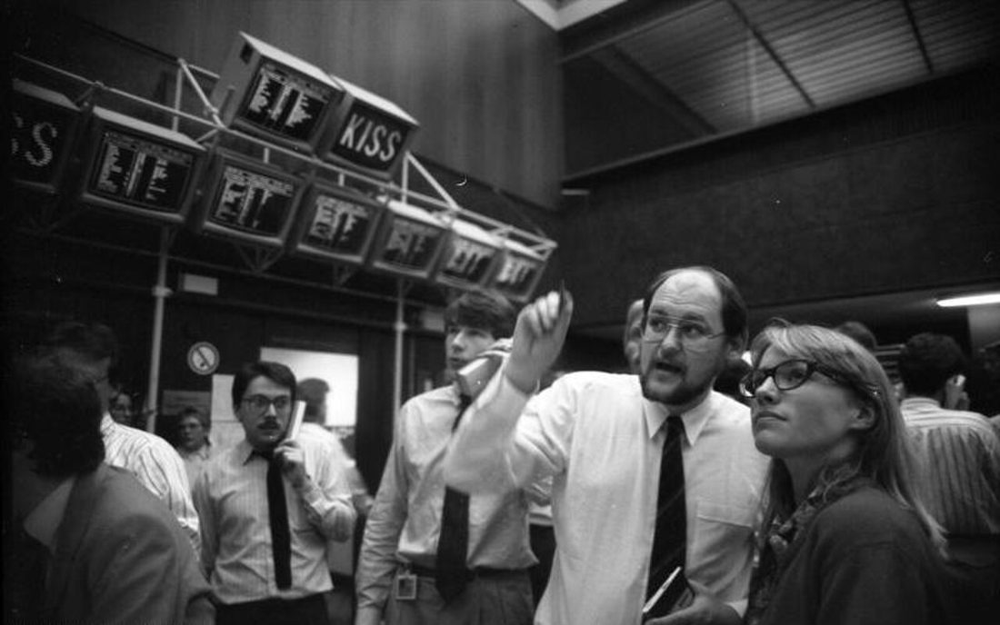

side project · orf 445, may 2025
sofr cointegration
my final for orf 445 at princeton: a multidimensional cointegration across sofr futures, to see if eight related contracts predict each other's next move better than two do.
- took the eight most-traded 3-month sofr futures (sr3) on february 5, 2024, from the course's kdb+ server, and sampled their mid prices every minute.
- tracked the eight prices with an exponentially weighted mean and covariance, with a one-hour time constant.
- projected each minute onto the first principal component to get a fair value for every contract. the gap between fair value and price was the signal.
- regressed the price change 1, 3, 6 and 12 minutes ahead on that signal, and compared it to my two-contract version from an earlier homework.
| horizon | 2 contracts β | 8 contracts β |
|---|---|---|
| 1 min | 0.117 | 0.151 |
| 3 min | 0.155 | 0.171 |
| 6 min | 0.149 | 0.150 |
| 12 min | 0.061 | 0.076 |
eight contracts beat two at every horizon. the fit stayed weak (r² of 0.03 at best), and the signal faded as the horizon got longer.

photo: frankfurt stock exchange, june 1988, bundesarchiv b 145 bild-f078969-0007, cc by-sa 3.0 de, via wikimedia commons.